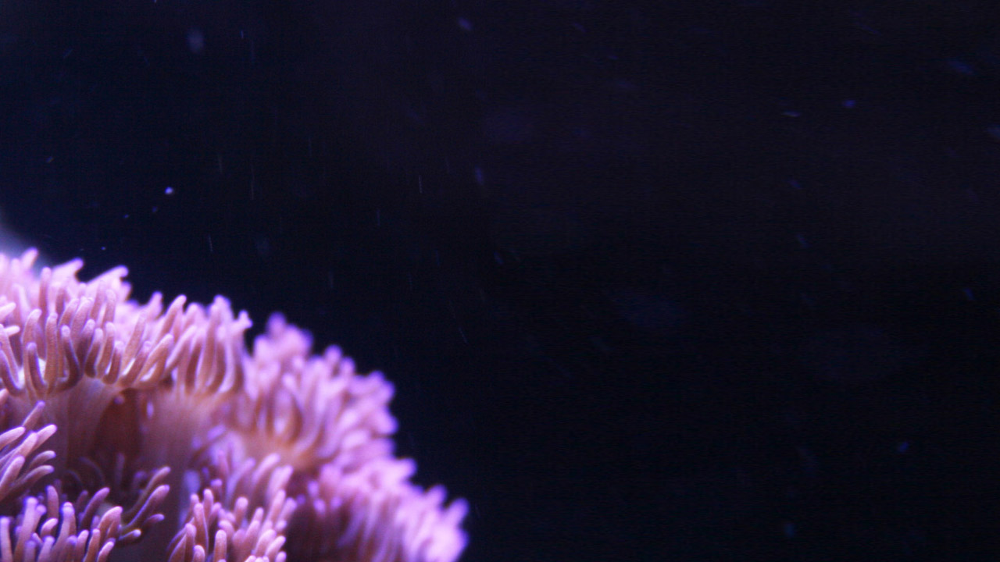

Clownfish
Clownfish or anemonefish are fishes from the subfamily Amphiprioninae in the family Pomacentridae. Thirty species are recognized, one in the genus Premnas, while the remaining are in the genus Amphiprion. In the wild they all form symbiotic mutualisms with sea anemones. Depending on species, Clownfish are overall yellow, orange, or a reddish or blackish color, […]
read this post